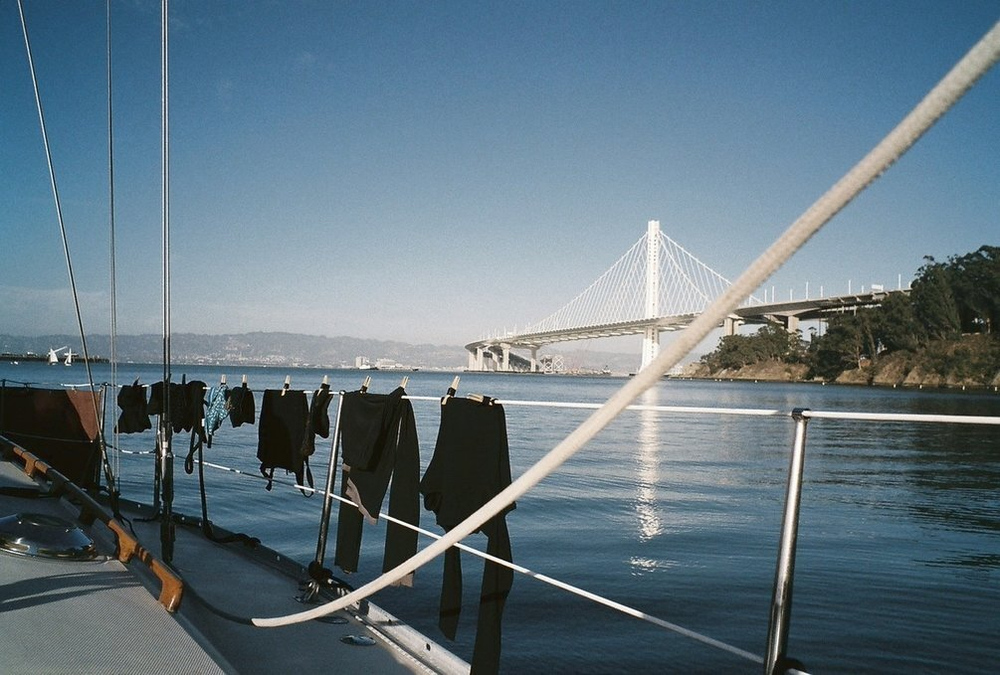

liveaboard
When living on the water, your home is always in motion, swaying with the currents and winds. Knowing that your vessel is not permanently tethered to the earth is a good feeling. It means you can go anywhere.
Our primary mode of transport has always been our bikes, they're quiet, and we're free to move myself around wherever, and whenever we want. Traveling by sailboat is taking this a step further. You can move yourself over from one continent to the other.
If you want to live in a sailboat you don't have to sail offshore. There is much to experience and see while staying in one country, and if ever you have the itch to leave you can do it. There are many benefits to having a floating home (see our buying a sailboat guide).
cleaning products
When it comes to cleaning, polishing or abrading, you don't need a crazy arsenal of products. Below is a list of recommendations for household cleaning, or maintenance aboard a boat.
| All purpose cleaner | Mix of 500 ml hydrogen peroxide(3%) with 2.5 ml(40 drops) of lavender and lemon essential oils, and 0.6 ml(10 drops) of peppermint essential oil. Leave on surface for several minutes before wiping clean. Store in a dark-coloured bottle. |
| Chrome | Apply apple cider vinegar on a soft cotton cloth to rub it clean. Then, use a fresh cloth with a dab of baby oil to make it shine. |
| Copper | Make a paste of either lemon or lime juice and salt. Rub gently to clean. |
| Aluminum | Cream of tartar and hot water. In a dish, add a few spoonfuls of cream of tartar, and stir in water to create a thick paste. Rub over the aluminum surface with a soft cloth. |
| Acrylic | Use a mild dish soap. Mix about 1 L of water with a few drops of dish soap in a bowl, agitate to create suds. Dip cloth into mix, clean acrylic gently. Wipe with a clean, damp rag, and follow up with a soft, dry rag to collect leftover moisture. |
| Plastic | Use a mixture of 1:2 white vinegar and warm water. |
| Brass | Coat the cut half of the lemon with table salt and rub it over the surface, re-coating the lemon with salt as needed. Buff to a shine with a clean, dry cloth. |
| Cast iron | Immediately after use, clean with plain hot water and a sponge. Stuck on food can be removed with a paste made of coarse salt and water. Dry with a towel, or over the oven at a low flame, and coat with a layer of oil. |
| Stainless steel | Wipe down with freshwater, or use a mild soap solution and warm water for tough stains. |
| Fibreglass | Dislodge debris with a scrubbing brush, rinse off with fresh water. For rust stains, make a paste of baking soda and water. Use a soft cloth and gently rub mixture onto the stain. Leave for 1 hour. For heavy yellow waterline and rust stains try Grunt emer-gel, a phosphoric acid-based product. Wear gloves while using it, as it is an irritant. |
| Wood dishes | Wash with mild soap and warm water. Dry immediately after washing. Never soak in water or put it away wet. Every month, apply a coat of food-grade oil (we use coconut) to keep the wood moisturized. |
| Wood cutting boards | Same basic treatment as wood dishes. Before adding oil, scrub clean with lemon and salt. Sprinkle board with coarse salt. Using a lemon half, cut side down, scour the surface. Let sit for 5 minutes, scrape mixture away, rinse clean and let air dry. |
| Sails | Wash with cool water mixed with dishwashing liquid. Let dry thoroughly before storing. |
| Mildew | Use white vinegar or lemon juice full strength. Apply with a sponge or scrubby. |
| Head | Sprinkle baking soda into the bowl, scrub with a brush. |
| Sink clog | Pour 120 ml or more of baking soda down the drain, then add 250 ml of vinegar. Plug it up, and let it sit 10-15 min, then pour more hot water down. Repeat until clear. |
| Clothes | Mix 2 cups of washing soda with the gratings from one 140 g bar of castile soap. Use 15 g for light loads, and 30 g for heavy loads. To whiten, disinfect, deodorize clothes of dish cloths, use sodium percarbonate at a ratio of 15 g per 5 L. |
carbonation

We do enjoy having some fizzy water now and again, but hate to have to purchase bottles for it. We decided against getting a soda stream given the fact that its bottles are proprietary and cannot be filled by anyone other than them. Making your own system is way better, and if you've got a big tank it'll last for a long, long time.
Here's what you'll need to get, this is also the order in which you need to connect them together:
- 5KG CO2 tank
- A regulator
- 1m of of vinyl tubing
- A ball-lock keg coupler
- A carbonator bottle cap
- A soda bottle (for carbonation with a reinforced bottom).
For a full tutorial, check out this site.
privacy
There is no privacy on a small boat. It's something you must prepare for. If you have plans to travel for extended periods of time with another person, you must be compatible, you must discuss problems when they arise and express concerns right away.
The combined space, below and atop deck, is bigger than it seems. If you are near land, there is always the option of going for a walk.
laundry
In populated cities, we carry dirty clothes ashore to a laundromat. We have an extra large army surplus canvas duffle bag that is perfect to carry big bundles of clothes. If there aren't any facilities nearby, we do our own washing. We wash them by hand with rain water using a set of buckets and a brush. The clothes dry well in the tropics, and during North American summers. Canadian winters don't allow for outside drying, unfortunately.
The sad fact is that all use of laundry soaps are toxic to sea life, even when bearing a label professing it to be "biodegradable" or "non-toxic". While the soap will eventually break down, it takes a while and can cause a lot of damage during that time. Phosphates, surfactants, triclosans, or any anti-bacterial ingredient, will do harm. According to the EPA, 28 ml (1 oz) of biodegradable soap needs to be diluted in 591 L (20,000 oz) of water to be safe for sea life. Washing clothes in plain water, with a good brush and a bit of white vinegar (diluted) can help freshen up clothes if there are no laudromats nearby, but in all, it might be better to wait to arrive at a facility to use soap.
For white clothes, or stained garments, we like to soak them in a bucket with some sodium percarbonate. It destains, deodorizes, whitens and is non-toxic to marine life. It breaks down to oxygen, water and sodium carbonate (soda ash) in your wash water.
When underway during long passages, we tend to wear the same clothes for a long, long time. If ever we do need to wash clothes, we'll do a quick salt water wash to save water, and rinse with fresh water. The clothes are hung out to dry on the lifelines, or on a separate line that we set up. Leaving dark clothes out to dry in the sun will cause it to discolour faster—such is the cost of sailing in warm places.
moorage
Living at anchor, that is, in a bay somewhere tethered to the earth with ground tackle is free. Some bays will have moorings installed that you can tie to for a small fee (often around $10-15 per day). Living at anchor is the cheap way to go, although getting a good anchor and rode is important as it will keep your boat safe.

Marinas often have guest docks with power, WiFi and showers, for a medium-to-high cost ($300-$800.) The longer the boat though, the bigger the cost. Some marinas charge per dock space rather than boat size, beware of these places. Moorage near cities is more expensive, and the price goes up during the high season (summer). Winter moorage is generally much cheaper.
Paying for annual moorage is a good idea, but keeping a boat in a marina means getting liability insurance, which in turn, means you'll need a survey, resulting in a seemingly interminable domino effect which can incur many more costs. Depending on the age of your boat, and when it was last surveyed (if ever), you may need a full condition out-of-water survey. This means paying a marina to lift your boat out, and paying the surveyor. A surveyor will point out mandatory items that need fixing and/or replacing, if these items are not complied with within 60 days the insurance will be void.
Living aboard your boat will cause wear from regular use of the space. If staying at a marina in your home country for long periods, paying for liveaboard fees (up to $150 extra per month) is necessary. If staying in a marina in a foreign country, liveaboard fees are often waived. Some marinas charge for electricity and water, be sure to take that into account, especially if you have plans to winter there and that your heating is electric. In winter, marinas charge less than in the high season. A marina that charges 900$ per month in the summer can charge 500$ in the winter.
toolbox

Basic tools to make repairs to the varieties parts of your boat.
Carry only those tools that fit the fasteners that hold the various bits of your boat together and you will have what you need and won’t be burdened by what you don’t. — Don Casey
Starter kit:
- Wire cutters
- Hammer
- A set of wrenches
- Socket wrench kit
- Pliers (needle nose)
- Vise-grips
- Adjustable crescent wrench
- Serrated knife
- Flat and round files
- Yankee-type push drill
- Hex wrench set
- Wire brush (cleaning bolts, metal etc)
- Digital multimeter
- Crimping tool (plus connectors and terminals)
- Many sizes of phillips head, straight-slot screwdrivers (or Multi-Bit Screwdriver)
- Electrical tape
- Stitching awl (to sew heavy materials, fast and with ease)
- Hack saw

Advanced kit add-ons. Many of these are useful if you plan to do most of your own work.
| Tool | General uses | Boat uses |
|---|---|---|
| Grinder | Cut metal, sanding, polish metal or wood etc | Polishing prop, cutting SS pipes or sheeting |
| Dremel | Cutting, sanding, etching, engraving wood or glass | Sharpening tools, drill bits, customizing wood with art, cutting small areas with precision. |
| Power drill | Drill holes through wood, metal, SS etc | Holes for hardware etc. |
| Orbital sander | Sanding | Fairing fibreglass, or rounding edges of wood. |
| Screw extractor (E-Z outs) | Removing broken bolts from wood or metal | Extracting seized bolts in engine body |
| Tap and die kit | Re-threading stripped bolt holes | Engine body hole repair |
| Bolt cutters | Large, cutting through heavy wires or metal | Cutting locks or rigging wires |
| Small hatchet | Cutting, whittling wood or other | Cutting lines, or through walls in an emergency |
| Shears | Heavy duty cutting | Cutting through heavy canvas or rope |
| Pipe wrench | Turning threaded pipes and fittings | Tightening or loosening galley plumbing, or stuffing box |
| Strap wrench (metal band) | Loosening and tightening pipes, fixtures and cylindrical items | Loosening or tightening oil and fuel filters on engine |
| Hand-sewing needles | 5 assorted straight and 2 curved sailmaker's needles, plus assortment of carpet needles | Sail, clothes or canvas repair |
| Caliper | Precious measuring | Measuring inside of pipes, diameters of tubes etc |
| Hole saws | Boring round holes | Cutting holes for wires, or instruments through wood or fibreglass. |
| Small manual pump | Extracting water, oil or sewage water | Oil changes, pumping out bilge water |
| Heat gun | Stripping paint, shrink wrapping, softening adhesives or plastics | Softening hoses for insertion, shrink wrapping electrical connections etc |
| Right angle screwdriver | Tightening or loosening screws with limited clearance | Removing screws from engine |
| Jigsaw | Cutting holes, shapes and curves in wood | Making complex custom wood projects |
| Small bench vice | Holding wood or metal in place for cutting or drilling | — |
We prefer not to have too many overly specialized tools that we only ever use once every 3 years, like a rivet gun, a grease gun or a swage tool. In a boatyard, there is always someone who will have these, and we're certain that they'll be more than happy to lend them to you.
bikes

Devine's bike is a Trek District S(2014), with a travel ratio of 48/15(3.2), the tires are 700x25C(200g) and the tubes 700x18-25C with 48mm valves. They chose the aluminum wheel because it can be installed with an ilan key alone, it is made entirely of aluminum so it does not rust as much as the other less resilient lighter wheels they had.

Rekka has a Specialized Langster(2014), with the same wheel size and tubes as Devine's bike. It has an alloy frame and carbon fork, and a single fixed cog.
We use Abus foldable locks.

These bikes have traveled far with us. We crossed oceans with them aboard our boat, and did not regret bringing them along. We experimented with various ways to stow them, but the best way was to take both wheels off, to remove the pedals, turn the handle bars sideways, and to tie all components with straps. Then, we put them in bike bags, and stored them in our quarter berth.

The bags are nothing special, but allowed us to carry them with us aboard trains while in Japan.